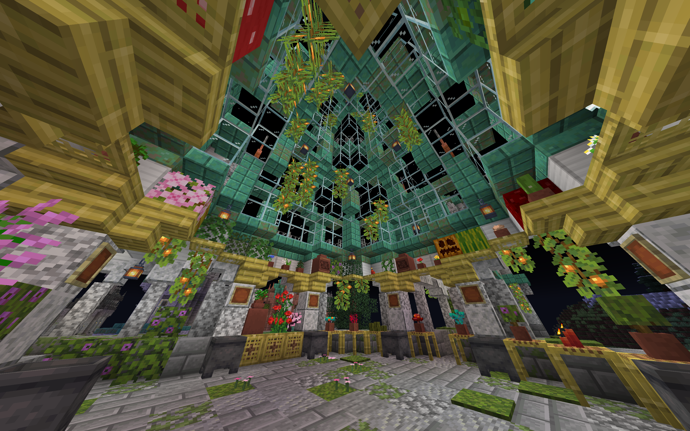
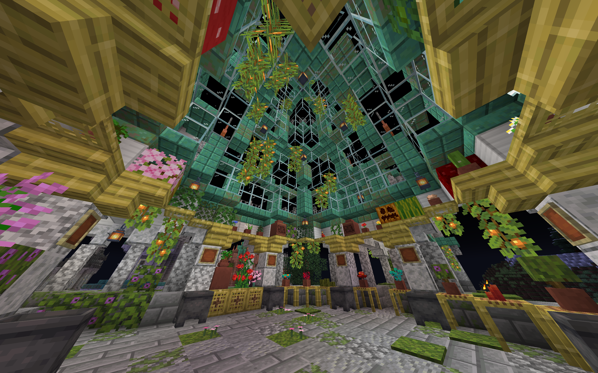

Hi there! I'm a Senior at the University of Chicago studying Computer Science. My research with the
Actuated Experience Lab and
Robot Intelligence through Perception Lab explores multi-modal interaction and robot learning, with focus on modular, reconfigurable systems.


 
